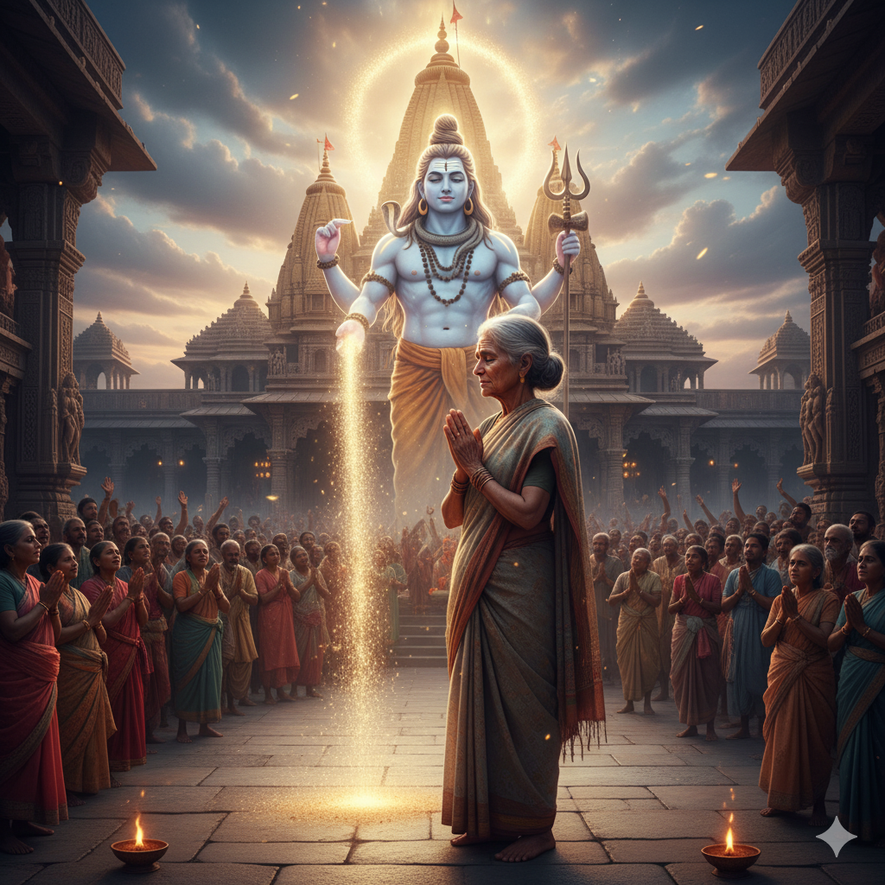
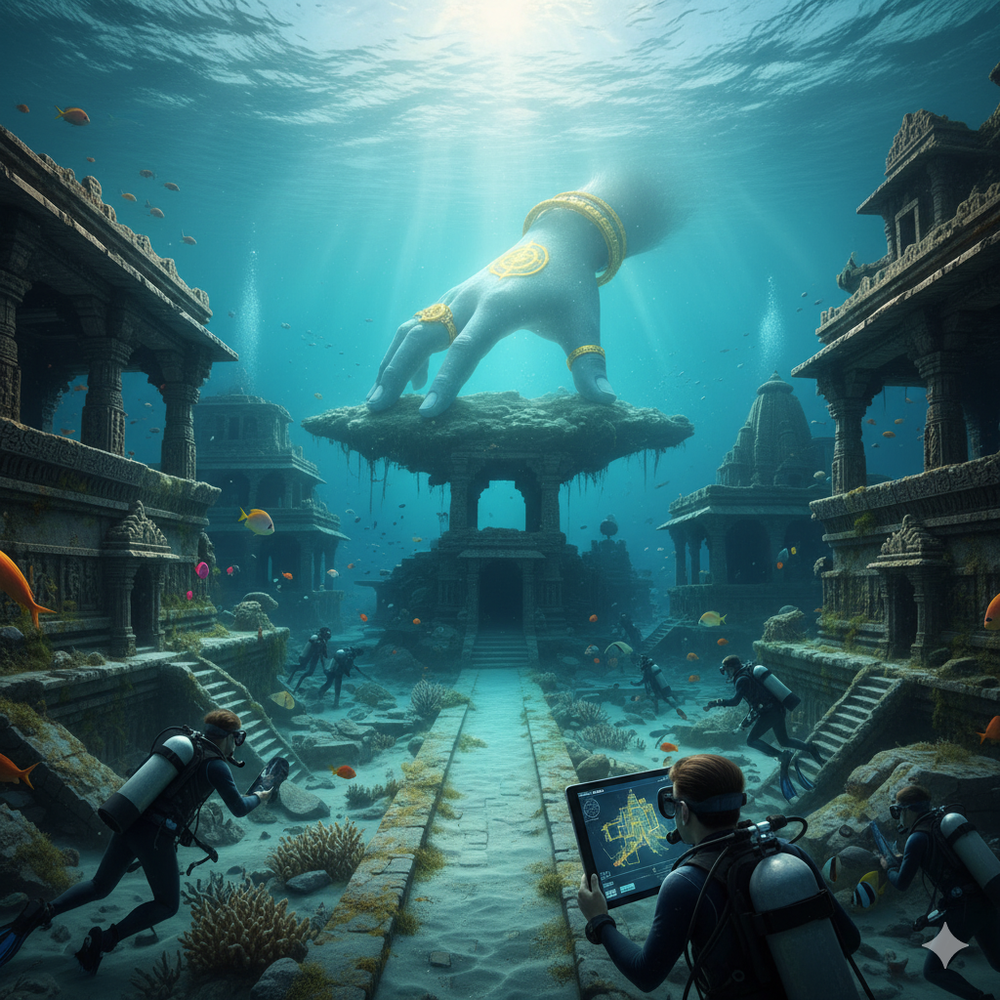
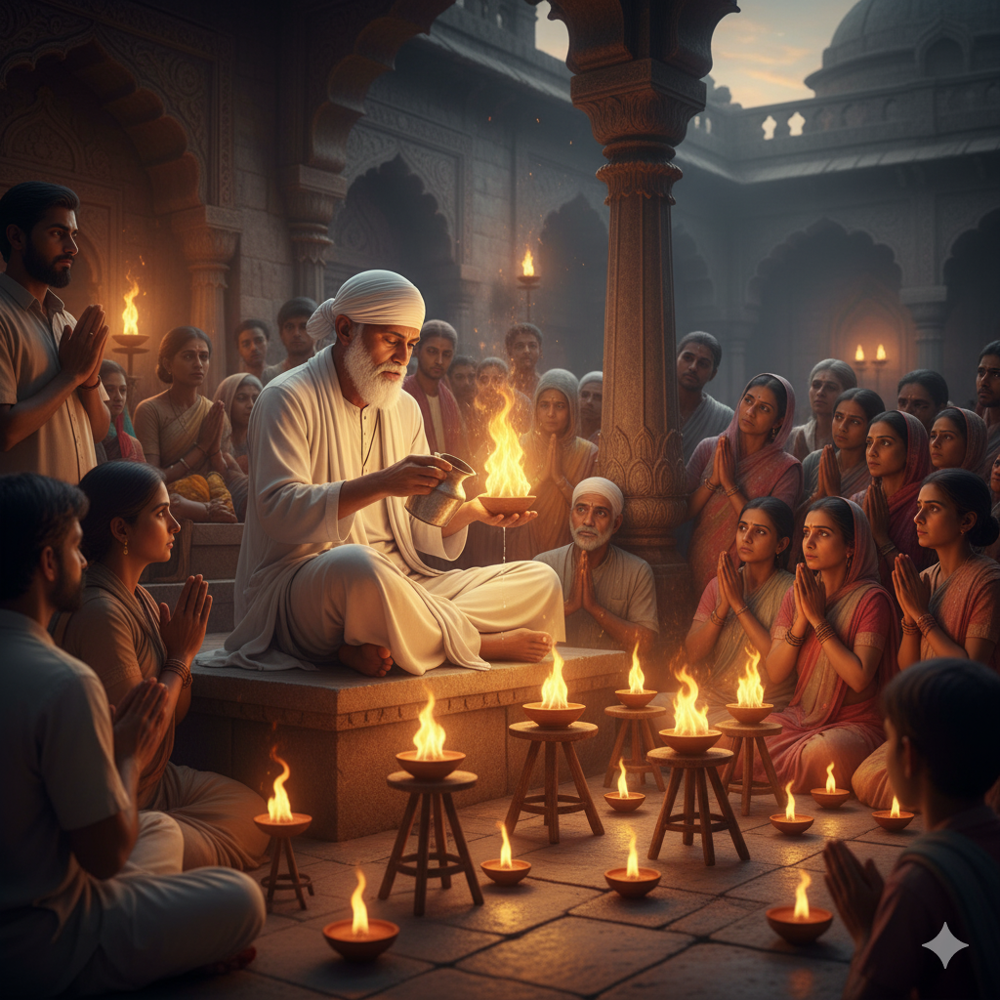
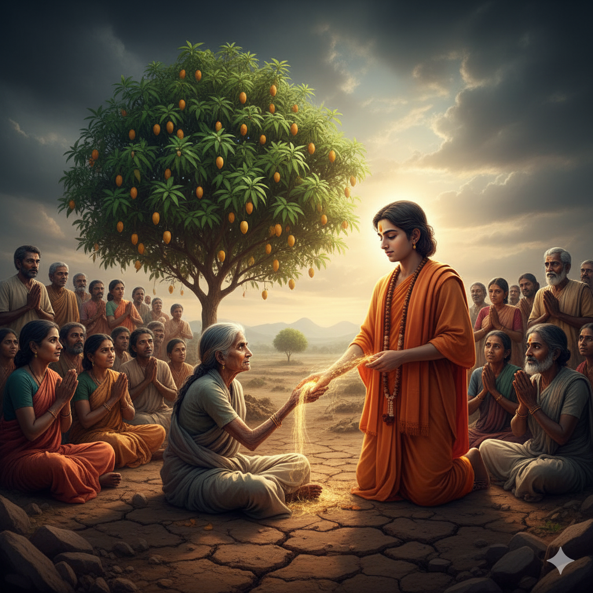
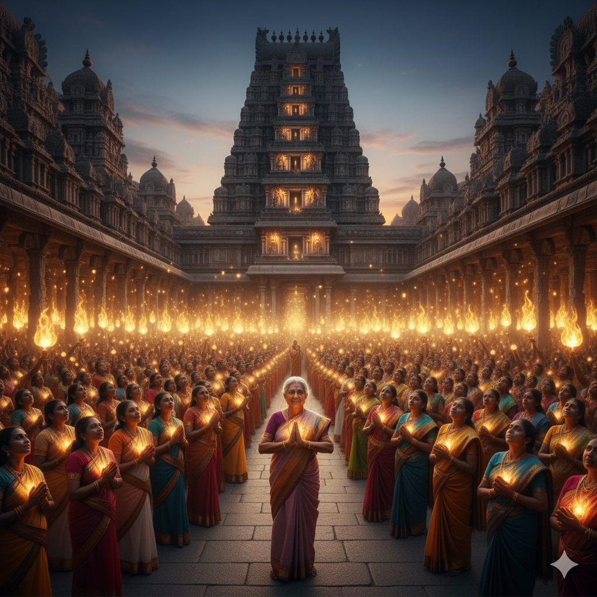
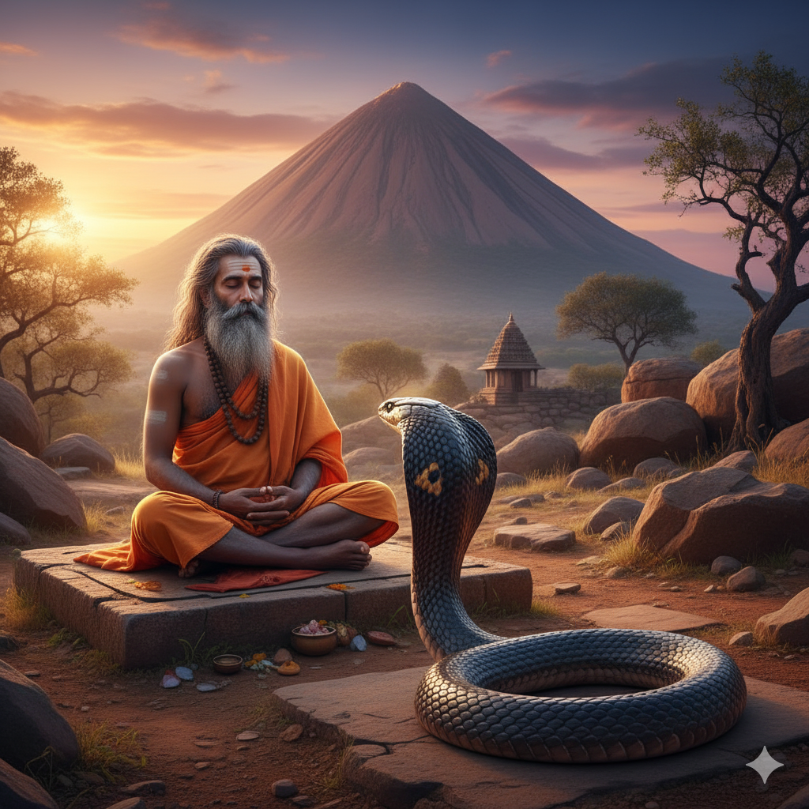
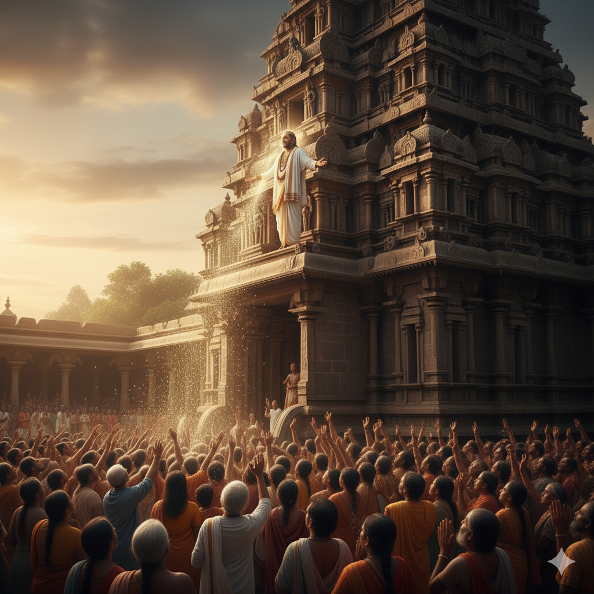
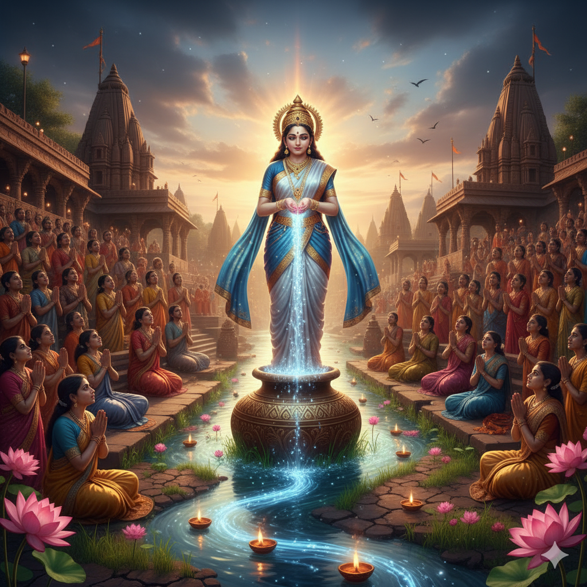
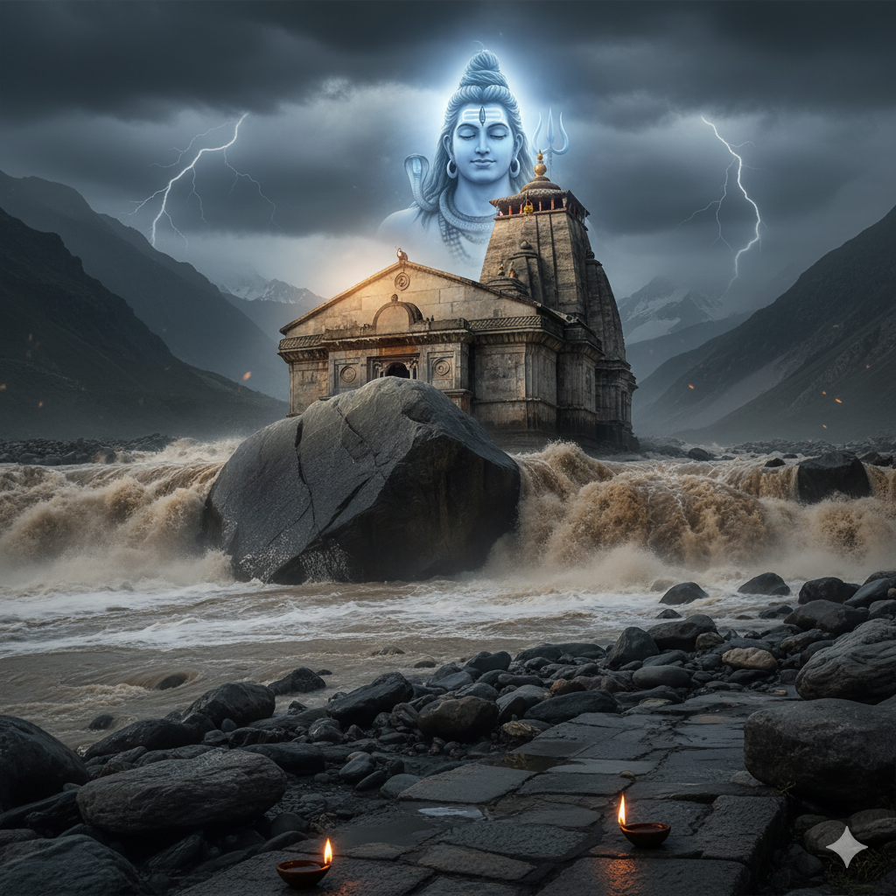
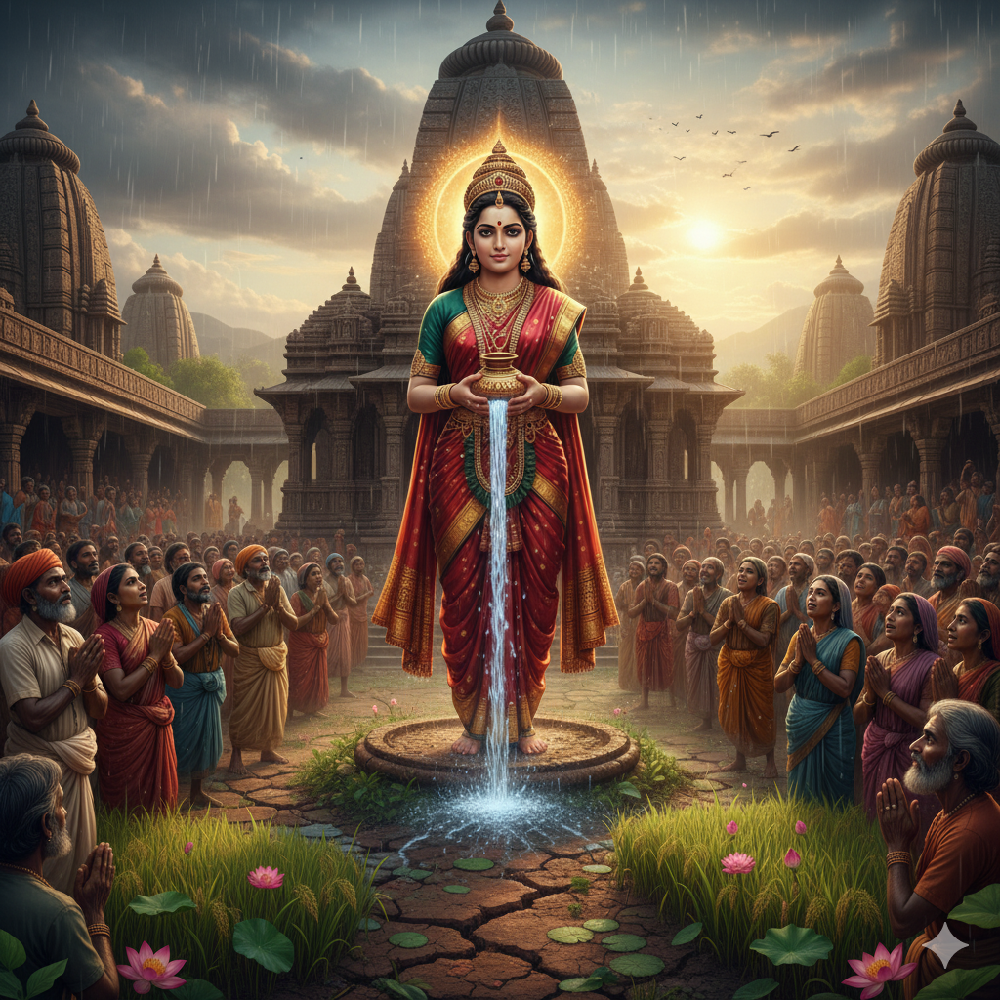

Hanuman – The Mountain of Devotion
When Lord Hanuman lifted the mountain to save Lakshman — a divine act of Bhakti.

🛕 The Silent Prayer of Tirupati
A devotee’s unspoken prayer reaches Lord Venkateswara in a miraculous way.

🧘♂️ The Saint of Rishikesh
A saint’s peaceful surrender shows the path to divine unity.

🕉️ The Miracle at Kashi Vishwanath
The story of Bhavani Bai — whose pure devotion touched the heart of Lord Shiva Himself.

🌿 The Hidden Hand of Lord Krishna — Dwarka’s Submerged City
When faith met science — the sea revealed the lost city of Dwarka beneath its waves.

🔥 Shirdi Sai Baba — The Lamp Without Oil
When the divine made water burn brighter than fire — a lesson of unshakable faith.

🌺 Adi Shankaracharya — The Miraculous Touch
When compassion met divinity — a saint’s kindness revealed the true essence of Dharma.

🌕 Meenakshi Temple — The Light of Faith
When love replaced ghee, and devotion lit every lamp in Madurai’s holy temple.
🕉️ The Sound of “Om” at Kailash
Pilgrims at Mount Kailash hear a divine vibration — the eternal sound of “Om,” the heartbeat of Lord Shiva Himself.

🐍 The Cobra and the Sage — Tiruvannamalai
A cobra bows before a meditating sage — a divine test of purity at Arunachala Hill.

🌼 Ramanuja’s Divine Act — The Secret Mantra
The saint who chose to save the world instead of himself — a lesson in pure compassion.

🌊 The Ganga’s Blessing — The Child Who Drowned
The divine moment when Maa Ganga saved a child during Haridwar’s evening aarti.

🔱 Lord Shiva’s Promise — Kedarnath Flood, 2013
The unbelievable moment when Bhim Shila protected Kedarnath Temple from destruction.

💫 The Girl Who Saw Krishna in Vrindavan
A blind girl's heart witnesses what eyes cannot — the divine dance of Krishna.

🌹 The Miracle of Kamakhya Devi
How the divine mother ended a deadly drought with her grace.